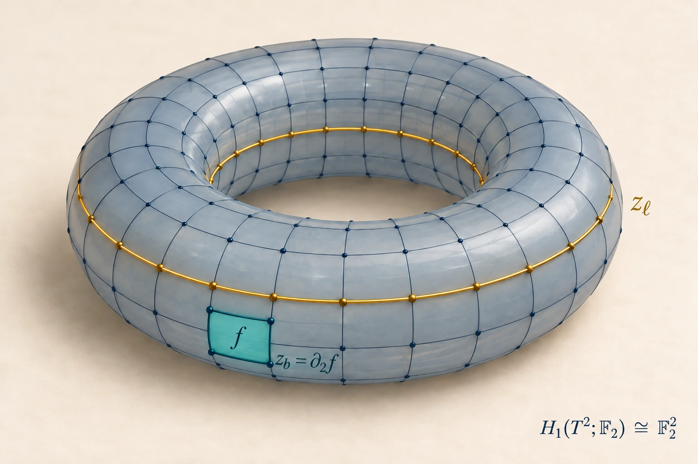
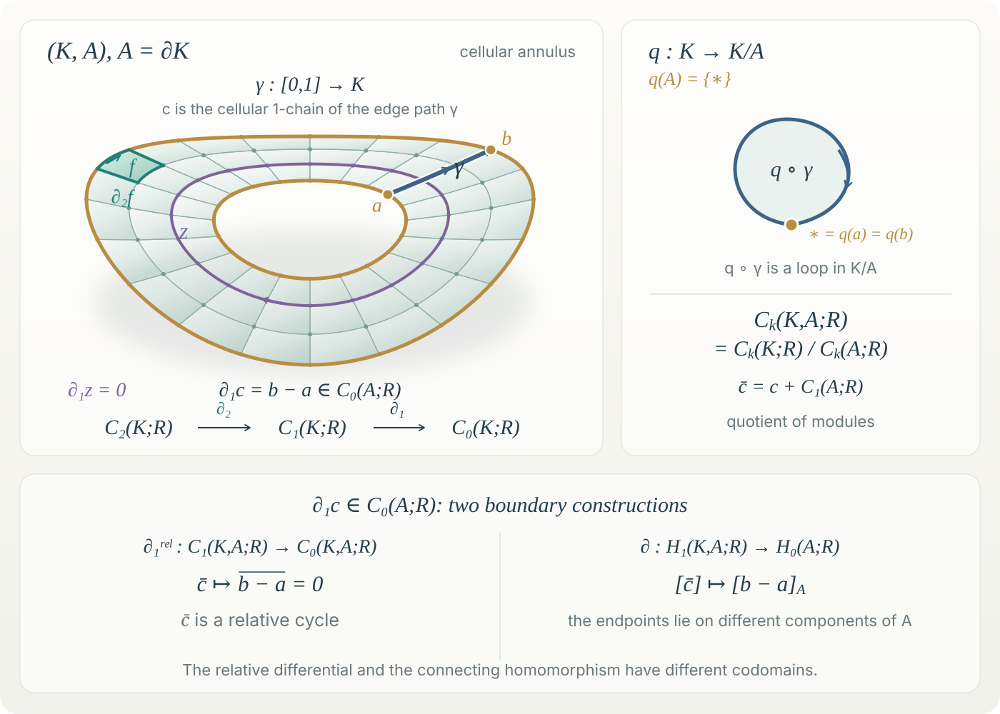
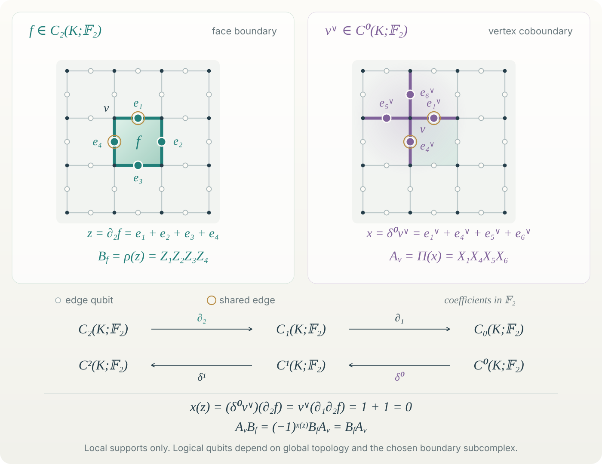
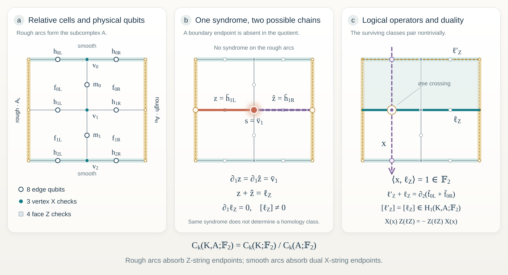

Research notes · Quantum error correction
Error corrections in view of algebraic topology
From spaces and quotient maps to syndromes and logical operators.
In reading quantum error correction textbooks, lecture notes, and papers, I often find that the mathematical spaces, map domains, and identifications are left implicit. This can make a compelling physical picture harder to reconstruct precisely. I prefer to begin with the topology and its algebra, then ask which additional choices turn them into a quantum code.
A face is not its boundary; a chain is not a cochain; a homology class is not a quantum state. Keeping these objects distinct makes the connection to physics more direct. The aim of this note is to derive the familiar surface-code operators from explicit maps, and to see exactly what their measurements can—and cannot—tell us about an error.

1. Spaces, quotients, and homotopy
Definition 1 — Quotient space. Let \(K\) be a topological space and \(\sim\) an equivalence relation. The set \(K/{\sim}\) consists of equivalence classes; the projection \(q:K\to K/{\sim}\), \(u\mapsto[u]\), equips it with the quotient topology:
For a nonempty subspace \(A\subseteq K\), the notation \(K/A\) means that all points of \(A\) are identified to one point, with every point outside \(A\) remaining distinct.
For example, identifying opposite sides of a square produces a torus. This changes the topological space. Later, a quotient such as \(Z_1/B_1\) will instead identify algebraic chains that differ by a boundary. These are different quotient constructions.
Definition 2 — Based homotopy. Fix a basepoint \(k_0\in K\). Based maps \(f,g:(S^n,*)\to(K,k_0)\) are equivalent when a continuous map \(F:S^n\times[0,1]\to K\) satisfies \(F(\cdot,0)=f\), \(F(\cdot,1)=g\), and \(F(*,t)=k_0\). For \(n\geq1\),
For \(n=1\), this is the fundamental group: based loops modulo based homotopy, with multiplication given by concatenation. Higher groups \(\pi_n\), \(n\geq2\), are abelian; \(\pi_1\) need not be.
Homotopy deforms maps continuously. Homology, defined below, compares additive cycles modulo boundaries. They are related, but they do not impose the same equivalence relation. For path-connected CW complexes, the first connection is
Here the subscript \(\mathrm{ab}\) denotes quotienting by the commutator subgroup. Thus binary homology retains the additive, parity-valued information relevant to the code considered here; it does not retain the whole fundamental group.
2. Cellular chains and their duals
Definition 3 — Cellular data. Let \(K\) be a finite oriented regular two-dimensional CW complex and \(R\) a commutative ring with unit. Its skeletons satisfy \(K^{(0)}\subseteq K^{(1)}\subseteq K^{(2)}=K\). The \(0\)-cells are points. For \(k\geq1\), a \(k\)-cell is attached by a map \(a_\sigma:S^{k-1}\to K^{(k-1)}\); regularity requires its characteristic map \(D^k\to\overline\sigma\) to be a homeomorphism. Set
The set \(K_k\) indexes the open \(k\)-cells. A chain is a formal linear combination of cells. A cochain is an \(R\)-linear functional on chains; its cellular dual basis satisfies \(\sigma^\vee(\tau)=\delta_{\sigma\tau}\).
Notation relative to Hatcher. Throughout this note \(C_n(K;R)\) denotes cellular chains. The chosen cell orientations identify it with Hatcher’s skeletal group \(H_n(K^{(n)},K^{(n-1)};R)\), where \(K^{(-1)}=\varnothing\). Hatcher denotes the cellular differential by \(d_n\); here it is written \(\partial_n\). The cellular homology theorem identifies its homology with singular homology. The symbols are fixed here to keep the chain and cochain domains explicit.
Write \(v,e,f\) for vertices, oriented edges, and faces. The cellular boundary maps and their dual coboundaries are
Here \(\phi\in C^k\), \(c\in C_{k+1}\), and \(\delta^1\delta^0=0\). The notation suppresses \((K;R)\) only within this fixed complex.
Definition 4 — Incidence coefficients. For an oriented face \(f\), let \(a_f:S^1\to K^{(1)}\) be its attaching map. For an open edge \(e\), let \(q_e:K^{(1)}\to K^{(1)}/(K^{(1)}\setminus e)\cong S^1\) collapse its complement. With \(\iota:\mathbb Z\to R\), \(m\mapsto m1_R\), put
An edge oriented from \(s(e)\) to \(t(e)\) has \(\partial_1e=t(e)-s(e)\). Consequently,
The second identity follows by evaluation on each edge. It takes a vertex cochain as input; \(\partial_1\) takes an edge chain as input. A vertex and its dual basis functional cannot be substituted for one another without specifying an identification.
This evaluation is canonical. Writing both modules as \(R^n\), or writing \([\delta^0]=[\partial_1]^{\mathsf T}\), uses the chosen cellular bases.
3. Homology, exactness, and chain maps
Definition 5 — Cycles, boundaries, and homology. For a chain complex \((C_*,\partial_*)\), set
The identity \(\partial_k\partial_{k+1}=0\) gives \(B_k\subseteq Z_k\). A class is \([z]=z+B_k\); two cycles represent the same class precisely when \(z'-z=\partial_{k+1}b\) for some \(b\in C_{k+1}\). Dually,
A sequence \(M\xrightarrow{a}N\xrightarrow{b}P\) is exact at \(N\) when \(\operatorname{im}a=\ker b\). A chain complex requires only containment. Its homology measures the failure of exactness. The following are genuine short exact sequences:
Here \(i,j\) are inclusions, \(q(z)=z+B_k\), and \(\partial_k\) in the first sequence is corestricted to its image. The cellular complex itself is generally not exact.
Definition 6 — Chain map. A family of \(R\)-linear maps \(F_k:C_k(K;R)\to C_k(L;R)\) is a chain map when \(\partial_k^L F_k=F_{k-1}\partial_k^K\). Thus both squares commute:
It induces \(H_k(F_*):H_k(K;R)\to H_k(L;R)\), \([z]\mapsto[F_kz]\): cycles map to cycles and boundaries to boundaries.
For a continuous cellular map \(f:K\to L\), write \(f_\sharp\) for its induced cellular chain map and \(f_*\) for the induced homology map, following the distinction between chain and homology maps in Hatcher. This describes compatibility with topology; implementing a physical operation on a quantum device requires additional data.
4. Relative chains and two different boundary maps
Definition 7 — Relative complex. Let \(A\subseteq K\) be a subcomplex. Since \(\partial_kC_k(A;R)\subseteq C_{k-1}(A;R)\), the quotient modules carry an induced differential:
Here \(\overline c=c+C_k(A;R)\). Replacing \(c\) by \(c+a\), \(a\in C_k(A;R)\), changes \(\partial_kc\) by \(\partial_ka\in C_{k-1}(A;R)\); hence the formula is well-defined. Also \((\partial^{\mathrm{rel}})^2=0\).
The relative cochains are the dual of this quotient, equivalently the ordinary cochains that vanish on chains in \(A\):
A relative cycle need not be closed as an ordinary chain: its boundary need only lie in \(A\). For example, a path with both endpoints in \(A\) has zero relative boundary. For a nonempty CW subcomplex, \(H_k(K,A;R)\cong\widetilde H_k(K/A;R)\); the tilde denotes reduced homology. This relates the topological quotient to the algebraic construction without identifying them.

The inclusions \(i\) and quotient projections \(j\) form a degreewise short exact sequence of chain complexes:
It produces the long exact sequence of the pair; coefficient \(R\) is suppressed here:
Proposition 1 — Connecting homomorphism. The map
is defined by lifting a relative cycle to \(c\in C_k(K;R)\), taking its ordinary boundary, and viewing that boundary in \(A\).
Verification. The relative-cycle condition places \(\partial_kc\) in \(C_{k-1}(A;R)\), and \(\partial^2=0\) makes it a cycle there. Any equivalent representative has a lift \(c'=c+a+\partial_{k+1}b\), with \(a\in C_k(A;R)\). Then \(\partial_kc'-\partial_kc=\partial_ka\), a boundary in \(A\). Thus the class is independent of both choices. \(\square\)
Following Hatcher, the symbol \(\partial\) also denotes the connecting homomorphism. The relative differential \(\partial_k^{\mathrm{rel}}\) acts on relative chains; the connecting map \(\partial\) acts on relative homology classes and lands in the homology of \(A\). Its domain and codomain distinguish it from the chain differential. Neither is a homotopy-group boundary map. Relative homotopy is a separate construction using homotopy classes of maps of based pairs; it is not the quotient defining \(H_k(K,A;R)\). These distinctions will specify which error endpoints a boundary is allowed to absorb.
5. The physical problem: which error occurred?
Suppose a quantum state is encoded in many physical qubits. Noise changes individual qubits, while measurements must reveal enough information to correct the error without measuring the encoded state. A surface code addresses this with local commuting checks. The mathematical question is: which parts of an error are visible to those checks, and which undetectable changes remain physically distinct?
Choose a cellulated surface and work over \(\mathbb F_2\). For a closed surface use \(D_*=C_*(K;\mathbb F_2)\). For a patch with a selected rough boundary subcomplex \(A\), use \(D_*=C_*(K,A;\mathbb F_2)\). Write \(d_k:D_k\to D_{k-1}\) for the corresponding differential and \(d^k:D^k\to D^{k+1}\) for its dual. In the relative case, the cellular basis consists of cells not contained in \(A\).
| Mathematical object | Physical interpretation |
|---|---|
| Basis edge of \(D_1\) | One data qubit |
| \(z\in D_1\), \(x\in D^1\) | Supports of \(Z\)- and \(X\)-type Pauli errors |
| \(d_2f\in D_1\) | Label of a \(Z\)-plaquette check |
| \(d^0v^\vee\in D^1\) | Label of an \(X\)-star check |
| \(d_1z\in D_0\), \(d^1x\in D^2\) | Measured error syndromes |
| \(H_1(D_*)\), \(H^1(D_*)\) | Undetectable pure-type errors modulo stabilizers |

The picture describes labels and incidences. The next step supplies a Hilbert space and an operator realization; only then do the chains become quantum operations.
6. Derive the checks and their commutation
Return briefly to the general \(R\)-valued cellular complex. Choose homomorphisms of additive groups
These are not \(R\)-linear maps into \(\operatorname{GL}(\mathcal H)\). Define \(W_e(r)=\rho(re)\) and \(U_e(r)=\Pi(re^\vee)\). The cellular maps give the compositions
Proposition 2 — Incidence determines the products. Applying the homomorphisms to the incidence expansions gives
Factors commute within each family because its source group is abelian. A negative incidence yields an inverse, for example \(W_e(-r)=W_e(r)^{-1}\).
Thus the products follow from boundaries and coboundaries. Locality requires each \(W_e,U_e\) to act only on the Hilbert-space factor assigned to \(e\). A nonzero coefficient produces nontrivial support only when its label acts nontrivially. These group homomorphisms alone impose neither unitarity nor cross-commutation.
For the qubit code, use the binary complex \(D_*\) above, with \(n=\dim D_1\), and choose
The Pauli matrices supply the compatibility relation
Proposition 3 — Commutation from a typed composition. Let \(B_f=\rho(d_2f)\) and \(A_v=\Pi(d^0v^\vee)\). Then
Both checks are Hermitian involutions. The code space \(\mathcal C\subseteq\mathcal H\) is their simultaneous \(+1\) eigenspace.
The topology supplies \(d_1d_2=0\); the Pauli realization converts its evaluation into a commutation phase. For prime-dimensional qudits, replace qubits by \(\mathbb C^p\) and use compatible Weyl operators over \(\mathbb F_p\). A general coefficient ring requires additional representation data.
7. Decode a syndrome; preserve a logical class
A \(Z\)-error \(\rho(z)\), \(z\in D_1\), changes the star eigenvalues according to
Thus \(s_Z=d_1z\in D_0\) is the syndrome: for an interior error path, its endpoints are detected. Similarly an \(X\)-error \(\Pi(x)\), \(x\in D^1\), has syndrome \(s_X=d^1x\in D^2\). A cycle or cocycle has no syndrome. A boundary or coboundary is a product of stabilizers and acts trivially on the code. Therefore
Here \(\mathcal L_Z,\mathcal L_X\) are pure-type logical Pauli classes modulo stabilizers and global phases. Evaluation descends to \(H^1(D_*)\times H_1(D_*)\to\mathbb F_2\): a cocycle vanishes on boundaries, and a coboundary vanishes on cycles. A pair with evaluation \(1\) gives anticommuting logical \(X\) and \(Z\) operators. In cellular coordinates,
The encoded-qubit count is \(k=n-\operatorname{rank}H_X-\operatorname{rank}H_Z=\dim_{\mathbb F_2}H_1(D_*)\). For a closed torus it is two. The transpose notation records the chosen dual bases, not an equality of chains and cochains.
Given a measured syndrome \(s_Z\), a decoder chooses \(\widehat z\in D_1\) with \(d_1\widehat z=s_Z\). The residual error is a cycle:
Equal syndromes do not determine equal logical classes. A learned decoder may improve how \(\widehat z\) is chosen; the complex and its quotient determine what counts as success.
The same syndrome can leave different logical classes. The following finite planar example makes every map and boundary convention explicit.
8. A worked planar patch: boundaries, matrices, and recovery
Take a square disk \(K=[0,2]\times[0,2]\), divided into four unit-square faces. Let \(A=A_L\sqcup A_R\) be the union of its left and right sides, including their vertices and edges. These are the rough boundary arcs. The complementary top and bottom boundary arcs are smooth; their corner points belong to \(A\). We use the convention that \(Z\)-error paths may end on rough boundaries; dual-lattice \(X\)-error paths may end on smooth boundaries.

8.1 Fix the pair and the cellular bases
All coefficients below lie in \(\mathbb F_2\). Set \(C_n=C_n(K,A;\mathbb F_2)\), and write \(\partial_n:C_n\to C_{n-1}\) for the induced relative differential. Thus \(\bar e=e+C_1(A;\mathbb F_2)\) is a relative chain, while \([\bar e]\) is a homology class only when \(\bar e\) is a relative cycle. These are successive quotient operations.
Index rows from top to bottom by \(i=0,1,2\). The horizontal edges \(h_{iL}\), \(h_{iR}\) join the left, middle, and right columns; the middle-column vertical edges are \(m_0,m_1\). The surviving vertices are \(v_0,v_1,v_2\). The face \(f_{iL}\), respectively \(f_{iR}\), lies between rows \(i,i+1\) on the left, respectively right, for \(i=0,1\). Use the ordered bases
The four vertical boundary edges and their six vertices belong to \(A\), so their relative classes vanish. There are eight data qubits, one for each edge in \(\mathcal B_1\).
8.2 Compute the boundary maps, then the checks
The relative boundary of a horizontal edge retains only its middle-column endpoint. The boundary of a face loses the edge contained in \(A\). Explicitly,
The first formula for horizontal edges holds for \(i=0,1,2\); the formulas involving \(m_i\) or \(f_{iL/R}\) hold for \(i=0,1\). With coordinate columns in the stated bases, the complete matrices are
Every column of \([\partial_2]\) has zero image under \([\partial_1]\):
Consequently \(\dim\ker\partial_1=5\), \(\dim\operatorname{im}\partial_2=4\), and \(\dim H_1(K,A;\mathbb F_2)=1\). The matrices give three independent \(X\)-checks and four independent \(Z\)-checks on eight qubits. For example, with \(X_e,Z_e\) denoting the Pauli matrices on the qubit labelled by \(e\),
Thus the boundary check has three factors because its fourth edge vanishes in the relative quotient. Its support follows from the map, with no separate boundary rule added to the operator product.
8.3 The same syndrome can conceal a logical error
Suppose \(z=\bar h_{1L}\) is the actual \(Z\)-error support. A decoder might instead propose \(\widehat z=\bar h_{1R}\). The star measurements cannot distinguish them:
Applying the proposed recovery leaves the relative cycle
Its ordinary lift has one endpoint on each component of \(A\). Since \(K\) is contractible and \(A\) has two contractible components, the pair sequence reduces to
Here \(H_0(A;\mathbb F_2)\cong\mathbb F_2^2\), \(i_*(a,b)=a+b\), and the connecting homomorphism sends
The endpoint classes belong to \(H_0(A;\mathbb F_2)\). Exactness proves \([\ell_Z]\ne0\): the residual error has zero syndrome but changes the encoded qubit. In this equation \(\partial\) acts on homology classes; \(\partial_1\ell_Z=0\) above is a statement about the relative chain differential. The domains make the distinction explicit.
A successful recovery for the same actual error is \(\widehat z_{\mathrm{good}}=\bar h_{0L}+\bar m_0\). It has the measured syndrome, and its residual is a relative boundary:
Thus \(\rho(z+\widehat z_{\mathrm{good}})=B_{f_{0L}}\) acts as the identity on the code space. Recovery need not retrace the actual error; its residual must lie in \(\operatorname{im}\partial_2\). The proposed one-edge recovery \(\widehat z=\bar h_{1R}\) instead leaves the nonzero logical class proved above.
8.4 Boundary deformations and the conjugate logical operator
A top-edge path \(\ell'_Z=\bar h_{0L}+\bar h_{0R}\) is another representative of the same logical class, because
Physically, \(\rho(\ell'_Z)\rho(\ell_Z)=B_{f_{0L}}B_{f_{0R}}\). Multiplying by those two plaquette checks moves the path without changing its action on the code. This is the second quotient: relative cycles modulo relative boundaries.
For the conjugate logical operator take the cochain
Each left face boundary crosses its support twice; each right face boundary crosses it zero times. Hence \(\delta^1x=x\circ\partial_2=0\), while
The nonzero evaluation proves both \([x]\ne0\) in \(H^1(K,A;\mathbb F_2)\) and \([\ell_Z]\ne0\) in relative homology. The dual-lattice picture of \(x\) joins the smooth top and bottom boundaries, crossing each left horizontal edge once. It depicts the support of a functional; the algebraic object is the cocycle above. The primal rough-boundary path and the dual smooth-boundary path meet once, exactly accounting for the logical Pauli anticommutation.
This deliberately small patch encodes one qubit, with minimum nontrivial support weights \(d_Z=2\) and \(d_X=3\), hence code distance \(d=2\). The equal-weight one-edge errors \(\bar h_{1L}\) and \(\bar h_{1R}\) have the same syndrome and differ by a logical operator; this patch therefore cannot correct every single-qubit error. The example makes the role of the pair, the boundary matrices, and the evaluation pairing explicit in both successful recovery and logical failure.
References and scope
Adapted from my working notes on CSS notation and generalized plaquette/star operators. The constructions are established; this exposition emphasizes their domains, quotient maps, and physical realization. The LaTeX source for the chain and operator diagrams is also available.
- Allen Hatcher, Algebraic Topology, Chapters 0–3 and §4.1: quotient spaces, homotopy, cellular and relative homology, and dual constructions. See Chapter 2, pp. 115–118 for relative chains and the connecting homomorphism, and Theorem 2.35 (p. 139) for cellular homology.
- A. Yu. Kitaev, Fault-tolerant quantum computation by anyons, Annals of Physics 303 (2003): the toric-code realization.
- E. Dennis, A. Kitaev, A. Landahl, and J. Preskill, Topological quantum memory, Journal of Mathematical Physics 43 (2002): error chains, syndromes, and homological decoding.
- N. Delfosse, P. Iyer, and D. Poulin, Generalized surface codes and packing of logical qubits (2016): relative homology and mixed surface boundaries.